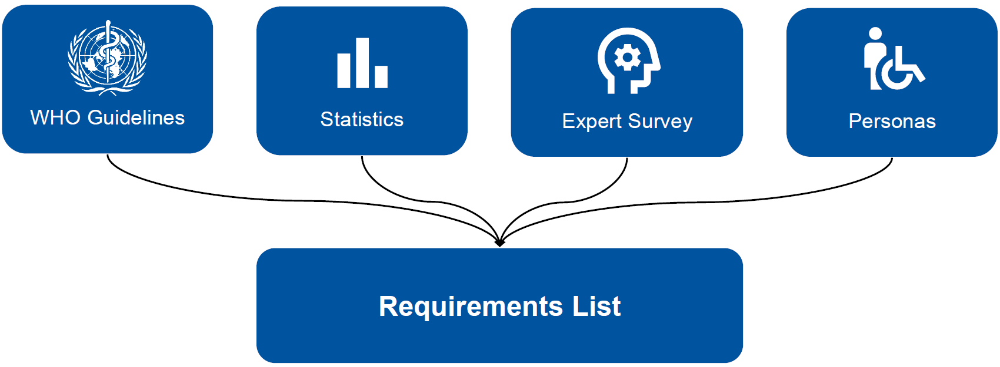
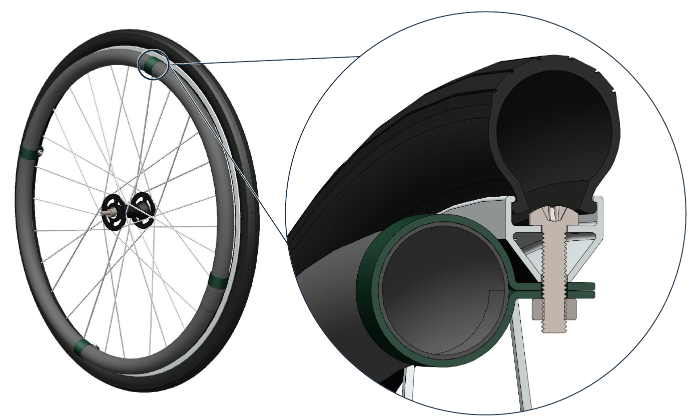
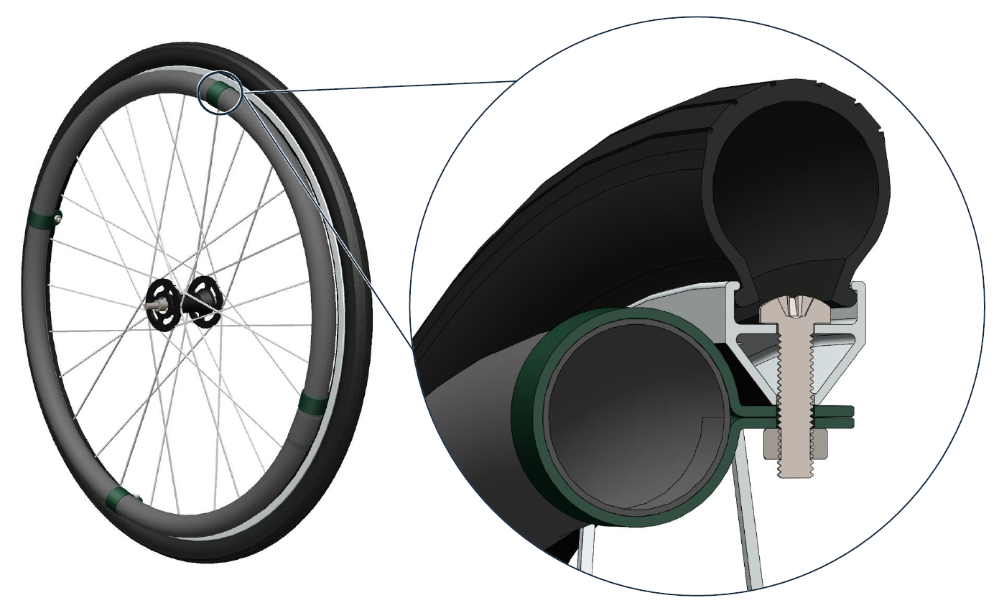
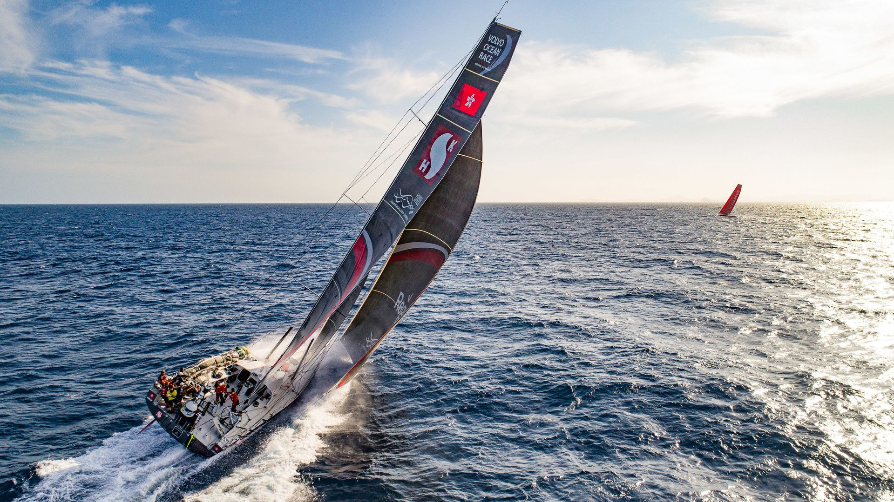

XXXXXXXXXXXXXXX
XXXXXXXXXXXXXXXXXXXXXXXXXXXXXXXXXXXXXXXXXXXXXXXXXXXXXXXXXXX

The Wooden Mobile is a low-tech wheelchair designed specifically for rural areas in sub-Saharan Africa. It combines local materials, simple manufacturing, and a well-thought-out design to create an affordable and repairable mobility solution.

Considering different environments, users and everyday conditions.
Focusing on simplicity, durability, and practical feasibility.
Looking at long-term use, adaptability, and knowledge sharing.
The Wooden Mobile is developed for uneven terrain, limited infrastructure, and long-term everyday use.
Simple structures, few components, and widely available bicycle parts enable repair and maintenance anywhere.
Open-source plans allow local workshops to build, adapt, and further develop the wheelchair independently.
This project was carried out as a collaboration between Roll On and RWTH Aachen University within the master’s course Applied Design and Product Development. The course is part of the engineering curriculum and focuses on practice-oriented product development based on real-world assignments. The development of the Wooden Mobile was conducted as a commissioned project for Roll On. Throughout the project, the student team worked on analysis, concept development, design, validation, and documentation in close alignment with the project goals defined by the organization. All results generated within the scope of this collaboration including concepts, designs, documentation, and development outcomes were created for Roll On and are provided to the organization for further use. The project served both as an academic learning framework and as a concrete contribution to Roll On’s mission of enabling locally producible, open-source mobility solutions.
More than 65 million people worldwide do not have access to a suitable wheelchair.
In economically disadvantaged regions in particular, there is not only a lack of affordable models, but also a lack of spare parts, repair facilities, and local expertise.
Many existing wheelchairs are not designed for the actual living conditions on site and can hardly be used or maintained in everyday life.
A major challenge is to design wheelchairs that are simple, robust, and can be manufactured locally.
They must function on uneven ground, be repairable with few tools, and not require specialized components. At the same time, they should offer users safety, stability, and basic comfort.
What's more, imported solutions often create new dependencies. Sustainable mobility can only be achieved where people themselves are able to build, adapt, and further develop assistive devices.
This is exactly where Roll On comes in: open construction plans, local craftsmanship, and with the goal of making knowledge accessible instead of prescribing finished products.
The key features and design principles of the Wooden Mobile are presented below. They provide an overview of the structure, function, and most important aspects of the product.
XXXXXXXXXXXXXXXXXXXXXXXXXXXXXXXXXXXXXXXXXXXXXXXXXXXXXXXXXXX
XXXXXXXXXXXXXXXXXXXXXXXXXXXXXXXXXXXXXXXXXXXX
XXXXXXXXXXXXXXXXXXXXXXXXXXXXXXXXXXXXXXXXXXXXXXXXXXXXXXXXXX
The development of the Wooden Mobile took place in several consecutive steps. Design reviews served as structured interim assessments during which the respective stage of development was reflected upon and evaluated. The timeline provides insight into key decisions, challenges, and learning processes along the way.

In the first Design Review, the conceptual and methodological foundations of the Roll On project were established. The goal of this milestone was to gain a comprehensive understanding of the problem context, define a clear target group, and derive well-founded requirements for a low-tech wheelchair. The project was motivated by the global supply gap: although more than 65 million people worldwide rely on wheelchairs, access in Sub-Saharan Africa remains extremely limited due to high costs, poor availability, and a lack of repair infrastructure. This led to the core objective of developing a wheelchair that is affordable, robust, and repairable using locally available resources. The team analyzed common mobility impairments to identify users for whom a low-tech solution is suitable, focusing on individuals with sufficient upper-body strength. Interviews with aid organizations provided practical insights into usage conditions, ergonomics, and typical failure points. Based on this research, representative personas were developed, reflecting everyday mobility challenges in the target region. Finally, essential technical and social requirements were defined, forming the framework for all subsequent development steps.

The second Design Review focused on translating the defined requirements into a structured, solution-neutral development space. The main objective was to manage system complexity and establish a solid foundation for targeted concept development. A comprehensive functional structure was created, breaking down the core function “enabling mobility for people with walking impairments” into 43 sub-functions. These were grouped into three main functional strands: Design, Ergonomics and Low-Tech. This structure served as a systematic tool to foster innovation while allowing individual functions to be developed independently. Based on this analysis, the development focus was sharpened. Instead of redesigning all components from scratch, a deliberate decision was made to use globally available bicycle wheels as key functional elements. This approach covered several essential functions while strongly reinforcing the low-tech philosophy. In addition, initial sub-concepts for frames, seating solutions, and adjustment mechanisms were explored using locally available materials such as wood, bamboo, steel, and recycled plastics. This resulted in a realistic and reduced solution space for the next development phase.


The third Design Review concentrated on the systematic evaluation of multiple overall concepts and the selection of a preferred solution. Building on the previously developed sub-concepts, four different wheelchair concepts were compared: All-in-One Chair, Wooden Mobile, Rolling Car Seat, and Bamboo Ride. To enable an objective comparison, 39 criteria were derived from the requirements, reduced to 21 decision-relevant criteria, and weighted according to importance. Human well-being, low-tech suitability, and global availability were prioritized. Critical sub-concepts such as frame connections, seating solutions, and adjustment mechanisms were additionally validated through early physical testing to support theoretical assumptions. The weighted evaluation revealed clear trade-offs between ergonomics, low-tech feasibility, and design complexity. Overall, the “Wooden Mobile” emerged as the most balanced and robust solution. It combined good ergonomic adaptability with simple local manufacturing and structural reliability. Design Review 3 thus marked the transition from concept diversity to the focused development of a single overall concept.
 

The fourth Design Review focused on the detailed technical development of the selected concept. The objective was to dimension, validate, and technically secure the wooden wheelchair design in preparation for prototyping. A key element was the finite element analysis (FEA) of the frame structure. Based on realistic load cases and various seating positions, the wooden frame was iteratively optimized. The final design achieved a minimum global safety factor of 1.4 while reducing weight by more than 6kg comparable to commercial wheelchairs. In parallel, connection elements were systematically designed and dimensioned according to Eurocode 5 to ensure a robust, detachable, and locally manufacturable structure. For the drive system, globally available 26inch bicycle wheels were selected, combined with cost-efficient PVC hand rims. A steel-plate-based solution was prioritized for the wheel-to-frame interface, balancing safety and affordability. Front-wheel concepts and sourcing strategies were also evaluated with a strong emphasis on repairability and local production. Design Review 4 established the technical foundation for the final overall design.
The fifth Design Review marked the transition from detailed design to physical implementation. Its main objective was to simplify the overall concept, freeze the design, and validate both technical feasibility and economic viability. Based on feedback from Design Review 4, the original wooden wheelchair was significantly reduced in complexity. The resulting “Wooden Mobile Slim” features a simplified frame structure, standardized screw connections, and the elimination of adjustable mechanisms. This led to a substantial reduction in manufacturing effort while improving robustness and repeatability. Initial test constructions confirmed high structural stability with minimal tools and assembly time. Critical components such as the wheel–frame connection and hand rims were physically tested and refined. In parallel, a DIY assembly kit concept was developed, combining high-precision components with locally sourced materials. A detailed cost analysis demonstrated that the complete system (including the DIY kit and local procurement) can be realized for approximately €105, well below the target cost of €150. Design Review 5 therefore confirmed the technical, logistical, and economic viability of the Roll On concept.

The sixth Design Review marked the final phase of the Wooden Mobile development and focused on validation, documentation, and the preparation for project handover. The main objective was to transition from a developed prototype to a usable and transferable result. Based on the test plan defined in Design Review 5, the physical prototype was demonstrated and functionally tested against the previously defined requirements. This included evaluating structural integrity, basic usability, and functional performance under realistic conditions. Any remaining adjustments were finalized to ensure consistency between design intent and physical implementation. In parallel, the project outcomes were consolidated through comprehensive documentation. This included the creation of a assembly instructions and a parts-list, forming the basis for future reproduction and adaptation and for integration into an open-source documentation platform. Design Review 6 concluded the development process by validating the final prototype and consolidating all results into a complete, documented and transferable outcome.
The construction manual and parts list for the wooden mobile are available for download in this section.
These documents form the core outcome of the project and enable the wheelchair to be replicated, adapted, and further developed.
For further information, component-specific questions or inquiries about CAD models and technical details, please contact the organization Roll On directly.
They are responsible for overseeing the project and coordinating the further use of the documents.
The project thrives on commitment, exchange, and cooperation. People who would like to participate, support, or contribute their expertise are invited to get in touch here. Whether through ideas, technical know-how, craftsmanship, organization, networking, or other forms of support: every contribution helps to further develop the project and make it effective in the long term. The contact details for the project can be found below.
WoodenMobile is designed as open-source hardware.
Licensed under the CERN Open Hardware Licence v2 – Strongly Reciprocal (CERN-OHL-S v2).
View license textLicensed under the Creative Commons Attribution-ShareAlike 4.0 International (CC BY-SA 4.0).
View license text